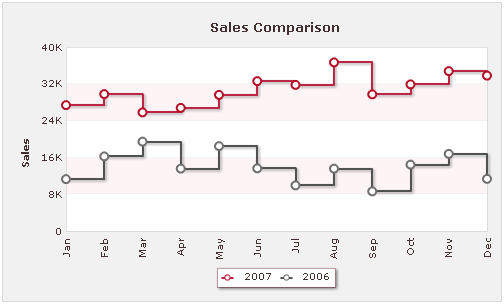
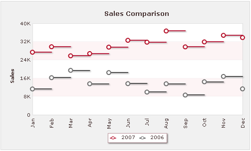

| Step Line Chart > Overview | ||||
Step Line chart is used to visualize trends for a particular event which is not continuous in nature. It is a specialized line chart which, unlike line charts does not use the shortest distance to connect two data points; instead it uses vertical and horizontal lines to connect the data points in a series to form a step-like progression. Essentially, trends are quite apparent from the general slope of a line chart. However, when the lines take distorted shapes for a specific segment of data points, it becomes very difficult to determine the drift. This is where the significance of Step Line chart comes in. For a given set of data, where a line chart shows the generic deviation of the data points, a step line chart not only enables you to compare the magnitude and change in values at different point of the same series but also helps you discern the intermittent pattern of the trend at the same time. The following image shows a Multi-series Step Line chart: <chart caption="Sales Comparison" yaxisname="Sales" showvalues="0" showalternatevgridcolor="1" bgalpha="45" bgcolor="DFDFDF" numdivlines="4" showalternatehgridcolor="1" canvasborderthickness="1" canvasbordercolor="CDCDCD" anchorradius="4" anchorsides="16" anchorbgcolor="FFFFFF" anchorbordercolor="6F6F6F" alternatevgridalpha="10" alternatehgridcolor="FAE4E9" alternatehgridalpha="40" alternatevgridcolor="CFCFCF" linethickness="2" anchorborderthickness="2" linedashgap="5" divlinealpha="5" canvasborderalpha="60" outcnvbasefontcolor="43302E" legendbordercolor="6C1121" legendborderalpha="40" borderColor="CDCDCD" borderalpha="70"> {
In the chart above, we have plotted the revenue of an organization for the year 2005 and 2006 which have been further divided into 12 months to display the monthly sales in each business year. With the step like composition, it accurately illustrates the overall revenue which is uneven from month to month. By default, the chart displays the vertical lines that run through the edges of the horizontal planes thereby joining them into different steps. However, you can also disjoin the horizontal segments by eliminating the vertical lines from the chart. Shown below is how the above chart will look like without the vertical lines:  In order to hide the vertical lines, you need to set drawVerticalJoins attribute in the following manner: <chart ... drawVerticalJoins='0' ... > You can also configure the direction of progression by using useForwardSteps attribute in the <chart> element. By default, the line plots are horizontally depicted and then vertical lines are drawn to connect the dataplots. To reverse the direction you need to set: <chart ... useForwardSteps='0'...> The images below show how differently a line progresses with forward steps enabled and forward steps disabled:
In the following pages we will learn how a simple Step Line chart is created and then proceed to the XML API of the chart. |